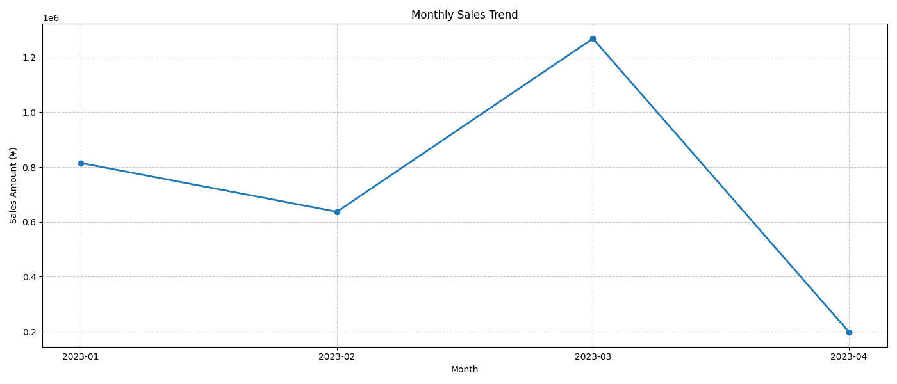
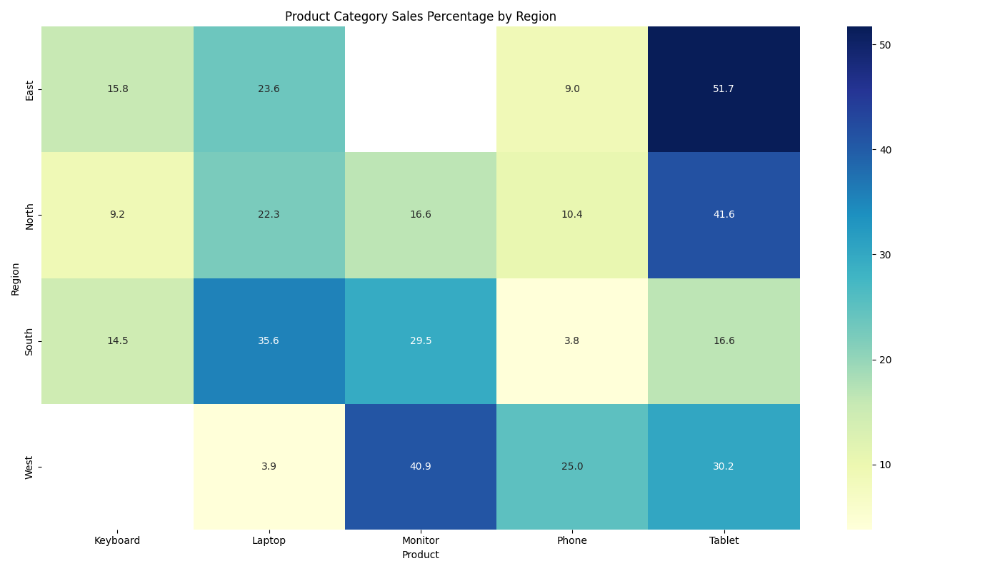
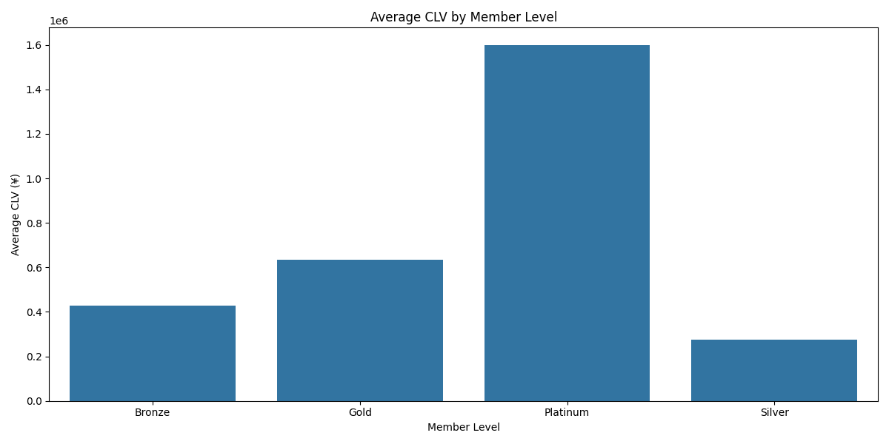

本报告综合了数据预处理、销售分析和客户分析三个阶段的关键发现，旨在为业务决策提供全面的数据支持。通过对销售数据和客户行为的深入分析，我们识别了业务中的优势和挑战，并提出了具体的改进策略。
关键发现包括：
基于这些发现，我们提出了针对性的业务优化策略，包括区域化产品组合调整、针对不同客户群体的营销方案以及提升客户留存率的措施。实施这些策略预计将提高总体销售业绩、提升客户满意度并增强业务长期竞争力。
初始数据集包含了销售记录以及客户信息，但存在一定比例的数据质量问题：
针对上述问题，采用了以下处理方法：
分类字段（产品名称、类别、区域）使用众数填充
异常值处理：
将超出上限的值替换为上限值，使数据分布更合理
数据转换：
通过预处理阶段，我们发现并解决了以下主要挑战：
预处理后的数据集为后续的销售和客户分析提供了高质量的基础，极大地提高了分析结果的可靠性和准确性。
销售分析的基本统计数据显示，公司总销售额达到 ¥3,160,152，平均订单金额为 ¥31,602。从产品类别来看，销售额分布如下：
| 产品类别 | 销售占比 | 销售额 | |---------|---------|--------| | Tablet | 37.8% | ¥1,193,849 | | Monitor | 24.3% | ¥768,654 | | Laptop | 21.4% | ¥675,043 | | Keyboard| 9.3% | ¥295,215 | | Phone | 7.2% | ¥227,390 |
从区域分布来看，销售额主要集中在以下区域：

销售数据在时间上呈现出明显的波动性和季节性特征：

关键时间维度发现： - 月度趋势：3月销售额最高，环比增长99.2%，达到¥1,269,107 - 季度表现：第一季度（Q1）销售额为¥2,721,269，占全年主要份额 - 周内分布：周三销售表现最好，贡献¥572,558销售额
产品在不同区域的表现存在显著差异：

区域产品偏好特点： - East区域：Tablet最受欢迎（51.7%） - North区域：Tablet占比最高（41.6%） - South区域：Laptop销售占比最高（35.6%） - West区域：Monitor表现最佳（40.9%）
综合分析得出以下关键销售洞察：
客户生命周期价值(CLV)分析揭示了客户长期价值的分布情况：
CLV关键发现： - 平均CLV：¥504,770 - CLV分布：从最低的¥3,293到最高的¥2,140,043，分布较为分散 - 会员等级影响：铂金会员的平均CLV(¥1,597,694)显著高于其他等级

基于RFM(Recency, Frequency, Monetary)方法的客户细分显示：
客户细分比例： - 高价值客户：24.4% - 有增长潜力客户：22.0% - 一般价值客户：26.8% - 流失风险客户：26.8%
高价值客户画像： - 平均年龄：43岁 - 性别分布：男女各占50% - 平均购买频率：4.2次 - 平均消费金额：¥285,987 - 平均CLV：¥749,306 - 会员分布：黄金会员(50%)、白银会员(30%)、青铜会员(20%)
不同客户群体展现出不同的行为模式：
客户行为特点： - 高价值客户：最近购买时间短(21天)，购买频率高(4.2次)，客户生命周期长(72天) - 有增长潜力客户：消费金额适中(¥215,748)，较长客户生命周期(51天) - 一般价值客户：购买频率较低(1.7次)，消费金额较低(¥123,473) - 流失风险客户：最近购买时间长(84天)，购买频率最低(1.1次)，生命周期短(2.4天)
购买行为与CLV的关系图显示频率和金额对客户价值的直接影响：
基于销售分析结果，建议以下销售策略优化：
跨区域经验分享：分析North区域成功因素，复制到其他区域
产品组合调整
针对Phone产品线：评估其低销售表现原因，考虑产品升级或重新定位
时间营销策略
淡季策略：在4月等销售低谷期推出限时特惠或捆绑销售
价格策略优化
针对不同客户群体的特点，建议以下客户关系管理改进方案：
组织高端社交活动，增强品牌忠诚度
有增长潜力客户提升
建立定期回访机制，了解需求变化
一般价值客户激活
增加线上互动频率，提高品牌粘性
流失风险客户挽留
基于产品销售表现和客户偏好，建议以下产品组合调整：
Monitor产品：强化在West区域的营销，研发符合该区域偏好的新型号
低表现产品改进
开发Phone与其他产品的捆绑销售方案，提升销量
产品创新方向
探索Tablet与Monitor的融合产品，抓住这两个热销品类的交叉市场
区域化产品策略
基于分析结果和策略建议，建议优先实施以下行动项目：
责任部门：客户关系管理团队
区域产品组合优化 (高优先级)
责任部门：销售团队和产品管理团队
流失风险客户挽回活动 (中优先级)
责任部门：市场营销团队
周三销售优化计划 (中优先级)
责任部门：销售团队和客户服务团队
产品价格弹性测试 (低优先级)
以下是战略实施的时间表和里程碑：
第一阶段（1-3个月）：基础优化 - 启动高价值客户维护计划 - 执行区域产品组合初步调整 - 开展客户流失原因调查分析 - 建立销售监控数据看板，追踪关键指标
第二阶段（4-6个月）：策略深化 - 推出定制化的客户群体营销活动 - 实施产品价格调整和促销优化 - 开发新的会员积分和奖励机制 - 优化时间维度销售策略（周度、月度）
第三阶段（7-12个月）：创新发展 - 基于高价值客户偏好开发新产品线 - 实施完整的客户生命周期管理计划 - 建立客户价值预测模型 - 开发客户流失预警系统 - 调整长期产品规划和定位策略
为衡量策略实施效果，建立以下关键绩效指标(KPI)：
销售表现KPI - 总销售额增长率：目标15-20% - 区域销售平衡度：降低区域间差异30% - 产品销售多样性：降低单一产品依赖度10% - 平均订单金额：提升5-10%
客户价值KPI - 客户留存率：提高10% - 高价值客户比例：从24.4%提升至30% - 流失风险客户比例：从26.8%降低至20%以下 - 平均客户生命周期价值：提升15%
营销效果KPI - 营销活动转化率：提高12% - 客户获取成本：降低8% - 客户挽回率：达到25%以上 - 会员等级提升率：提高15%
运营效率KPI - 库存周转率：提高20% - 产品-区域匹配度：提高15% - 促销ROI：提高10% - 客户服务满意度：达到90%以上
| 指标 | 数值 | |------|------| | 总销售额 | ¥3,160,152 | | 平均订单金额 | ¥31,602 | | 最畅销产品 | Tablet (37.8%) | | 最畅销区域 | North (38.8%) | | 最佳销售日 | 周三 | | 最佳销售月 | 3月 |
| 指标 | 数值 | |------|------| | 平均客户生命周期价值 | ¥504,770 | | 平均购买频率 | 2.44次 | | 平均客户留存率 | 78.05% | | 高价值客户比例 | 24.39% | | 流失风险客户比例 | 26.83% | | 铂金会员平均CLV | ¥1,597,694 |
| 区域 | 最受欢迎产品 | 占比 | |------|------------|------| | East | Tablet | 51.7% | | North | Tablet | 41.6% | | South | Laptop | 35.6% | | West | Monitor | 40.9% |